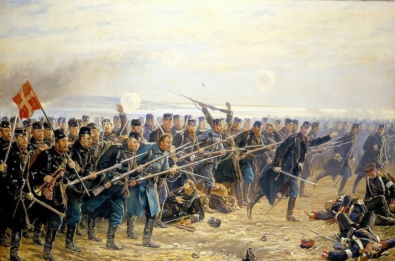
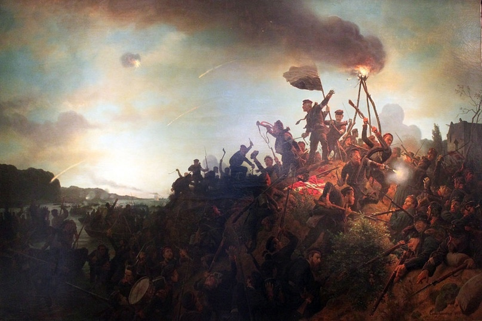

Дания и Пруссия. История противостояния
Авторы статьи: Максим Вахминцев, Маргарита Певнева
Опубликовано: 2 августа 2022
Опубликовано: 2 августа 2022
Статья в группе ВК Историческая империя: https://clck.ru/3M6Sru
Шлезвиг-Гольштейнский вопрос был одним из наиболее острых в североевропейской политике. Весь Гольштейн и южная часть Шлезвига были изначально заселены этническими немцами, однако к XII веку Священная Римская империя утратила контроль над последним – Шлезвиг забрала себе Дания.
В 1460 году, согласно Рибскому договору, Шлезвиг и Гольштейн стали единой территорией под управлением датского короля Кристиана I. Гольштейн притом, что интересно, формально остался в составе Священной Римской империи.
Дания была традиционным союзником России с начала XVIII века. Для Петербурга было важно поддерживать хорошие отношения с Копенгагеном, чтобы Балтийский флот имел возможность выходить в Северное море, а оттуда, в случае необходимости, направляться через Атлантический океан и Гибралтарский пролив в Средиземное море, где находился главный враг России – Османская империя.
{kind=link}
Отто Бахе. Возвращение датских солдат в Копенгаген в 1849 году.
Британия, в свою очередь, стремилась не допустить прохода русских кораблей в Северное море, а в начале XIX века даже воевала с Данией из-за ее союза с Наполеоном. Лондон стремился разорвать кольцо Континентальной блокады и не допустить усиления позиций Франции в Скандинавии. Одним словом, наличие у Дании таких сильных союзников, внутренние проблемы Священной Римской империи и экспансия Пруссии Фридриха Великого на других направлениях долго не позволяли германским государствам вернуть силой под свою власть Шлезвиг и Гольштейн.
В 1848-1850 гг. между Пруссией и Данией состоялась первая в их истории война. Она не увенчалась для Пруссии большим успехом и на то имелось как минимум три причины:
1) неблагоприятная по отношению к планам Пруссии позиция великих европейских держав;
2) господство датского флота на море;
3) внутри самой Германии бушевала революция.
К 1864 году Пруссия значительно укрепила не только свои военные, но и политические позиции. Британская королева Виктория, в свою очередь, также стала более благосклонно относиться к Пруссии, поскольку рассчитывала ослабить Францию – своего главного конкурента в борьбе за колонии. Лондонские политики хотели столкнуть между собой немцев и французов, что не дало бы ни тем, ни другим возможность как диктовать свои условия в Западной Европе, так и угрожать Британии с моря.

В 1848-1850 гг. между Пруссией и Данией состоялась первая в их истории война. Она не увенчалась для Пруссии большим успехом и на то имелось как минимум три причины:
1) неблагоприятная по отношению к планам Пруссии позиция великих европейских держав;
2) господство датского флота на море;
3) внутри самой Германии бушевала революция.
К 1864 году Пруссия значительно укрепила не только свои военные, но и политические позиции. Британская королева Виктория, в свою очередь, также стала более благосклонно относиться к Пруссии, поскольку рассчитывала ослабить Францию – своего главного конкурента в борьбе за колонии. Лондонские политики хотели столкнуть между собой немцев и французов, что не дало бы ни тем, ни другим возможность как диктовать свои условия в Западной Европе, так и угрожать Британии с моря.
{kind=link}
8-я датская бригада при Дюббёле 18 апреля 1864 года, картина Йергена Зонне
Россия теперь также была весьма благоприятно настроена к национальным планам Гогенцоллернов. Александр II рассчитывал получить в лице единой Германии под прусским главенством сильного союзника в противостоянии с Британией и Францией, а также хотел отомстить Австрии за то, как она «отблагодарила» Россию за подавление Венгерской революции.
Если в 1854 году Николай I отказался идти на встречу принцу-регенту Вильгельму, то теперь последний, в союзе с Бисмарком, мог обещать России помощь в пересмотре неприемлемого для нее Парижского мира. Еще одной общей угрозой для Петербурга и Берлина были польские националисты, не оставлявшие попыток восстановить независимую Речь Посполитую.
Со смертью Фредерика VII на престол Дании вступил принц Кристиан, однако Шлезвиг и Гольштейн, как германские государства, признавали наследственную передачу власти только по мужской линии. Вследствие этого правительства Австрии и Пруссии потребовали от Копенгагена вывести войска из Шлезвига и Гольштейна.
Однако в ноябре 1863 года, еще накануне смерти Фредерика, Дания приняла новую конституцию и провозгласила Шлезвиг своей неотъемлемой частью. Последовавший в январе 1864 года ультиматум Вены и Берлина к Дании об оставлении Шлезвига был, конечно же, отвергнут.

Если в 1854 году Николай I отказался идти на встречу принцу-регенту Вильгельму, то теперь последний, в союзе с Бисмарком, мог обещать России помощь в пересмотре неприемлемого для нее Парижского мира. Еще одной общей угрозой для Петербурга и Берлина были польские националисты, не оставлявшие попыток восстановить независимую Речь Посполитую.
Со смертью Фредерика VII на престол Дании вступил принц Кристиан, однако Шлезвиг и Гольштейн, как германские государства, признавали наследственную передачу власти только по мужской линии. Вследствие этого правительства Австрии и Пруссии потребовали от Копенгагена вывести войска из Шлезвига и Гольштейна.
Однако в ноябре 1863 года, еще накануне смерти Фредерика, Дания приняла новую конституцию и провозгласила Шлезвиг своей неотъемлемой частью. Последовавший в январе 1864 года ультиматум Вены и Берлина к Дании об оставлении Шлезвига был, конечно же, отвергнут.
{kind=link}
Прусские войска высаживаются на Альзен, картина Вильгельма Кампхаузена
Объединенные германские (австро-прусские) войска опирались главным образом на свое численное превосходство и наличие казнозарядных ружей Дрейзе. Датчане планировали вести активную оборону при помощи крепостей Дюпель и Фредерисия, а перед этим собирались задержать немцев у Даневирке. Австро-прусское командование пришло к необходимости нанести датчанам быстрое поражение на Ютландии, дабы не дать им отойти в укрепленный Копенгаген.
После падения Дюппеля 18 апреля датчане решили оставить и Фредерисию – свою главную крепость в Ютландии – дабы сохранить армию. Но пруссаки не могли быстро продвигаться вперед и развивать оперативный успех из-за давления России и Британии, стремившихся не допустить оккупации Дании. И дело тут было даже не в том, что великие державы беспокоились за судьбу маленьких герцогств: и Лондон, и Петербург имели гораздо больше поводов опасаться того, что пруссаки могут захватить господство над Балтикой.
В общем, ради всеобщего спокойствия и восстановления своей армии Пруссия была вынуждена согласиться на перемирие с Данией, продлившееся с 12 мая по 26 июня. За это время союзные войска успел возглавить принц Фридрих Карл, начальником штаба коего был никто иной, как будущий фельдмаршал Хельмут фон Мольтке-старший.
С 29 июня по 16 июля 1864 года австро-прусские войска заняли всю Ютландию, чем фактически вынудили датскую армию капитулировать. 30 октября в Вене был заключен мирный договор – Кристиан уступил Шлезвиг Пруссии, а Гольштейн Австрии. Через два года вопрос о разделе герцогств станет одной из причин начала войны между странами, но это уже будет, впрочем, другая история.
После падения Дюппеля 18 апреля датчане решили оставить и Фредерисию – свою главную крепость в Ютландии – дабы сохранить армию. Но пруссаки не могли быстро продвигаться вперед и развивать оперативный успех из-за давления России и Британии, стремившихся не допустить оккупации Дании. И дело тут было даже не в том, что великие державы беспокоились за судьбу маленьких герцогств: и Лондон, и Петербург имели гораздо больше поводов опасаться того, что пруссаки могут захватить господство над Балтикой.
В общем, ради всеобщего спокойствия и восстановления своей армии Пруссия была вынуждена согласиться на перемирие с Данией, продлившееся с 12 мая по 26 июня. За это время союзные войска успел возглавить принц Фридрих Карл, начальником штаба коего был никто иной, как будущий фельдмаршал Хельмут фон Мольтке-старший.
С 29 июня по 16 июля 1864 года австро-прусские войска заняли всю Ютландию, чем фактически вынудили датскую армию капитулировать. 30 октября в Вене был заключен мирный договор – Кристиан уступил Шлезвиг Пруссии, а Гольштейн Австрии. Через два года вопрос о разделе герцогств станет одной из причин начала войны между странами, но это уже будет, впрочем, другая история.